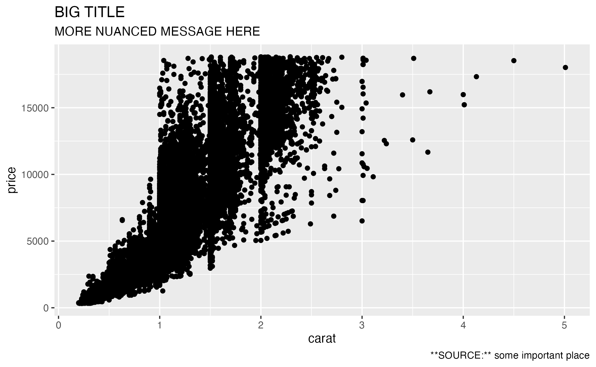
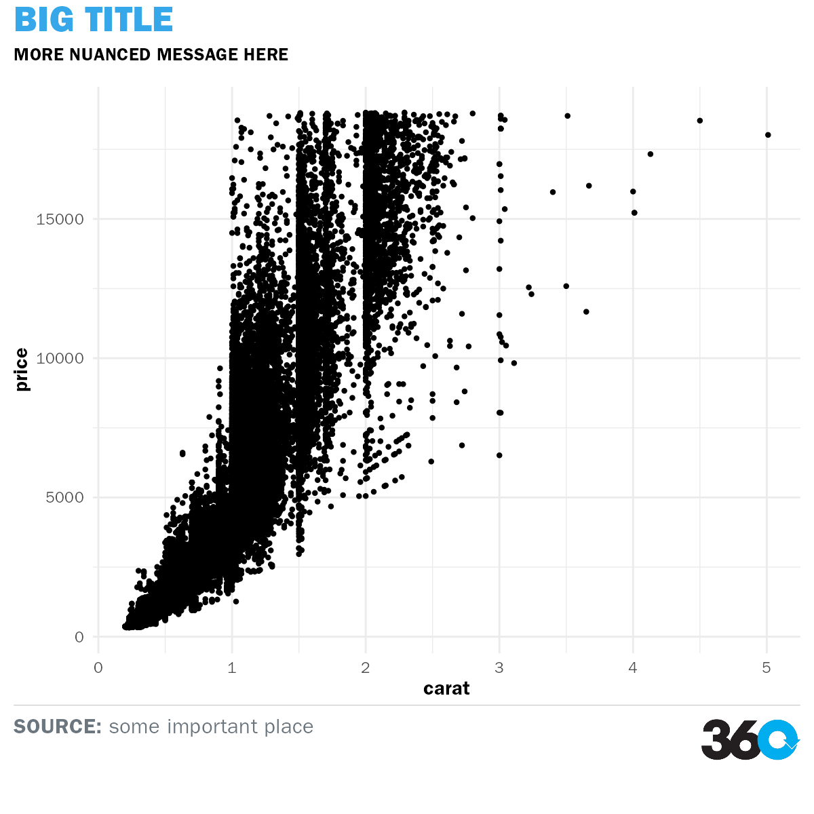
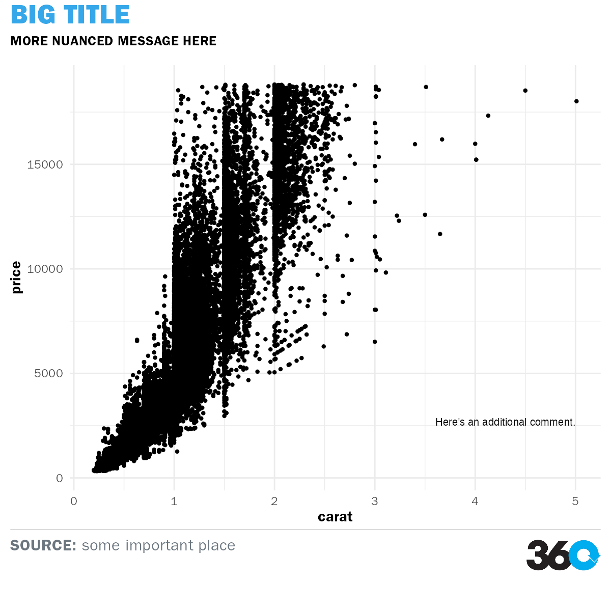
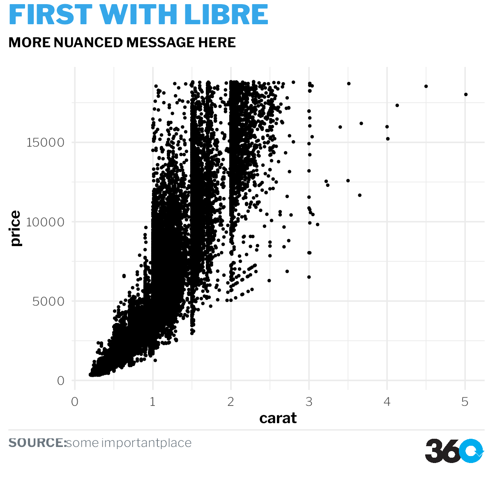
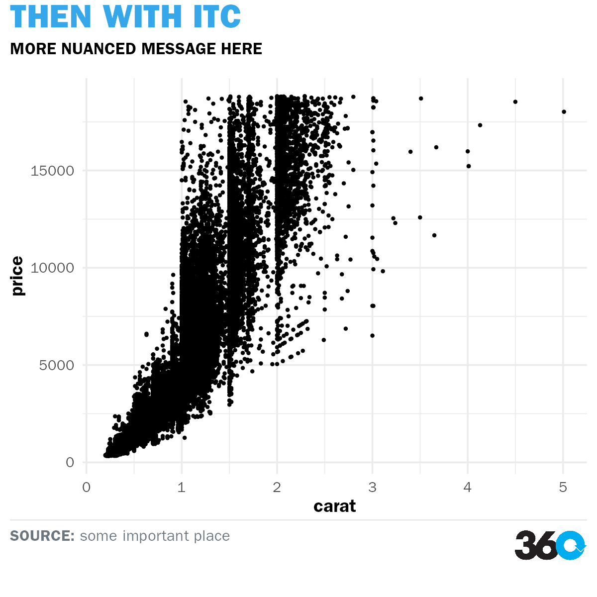

working-with-fonts.Rmd360’s style guide gives a few acceptable alternatives:
You’ll need to install one (or both) of these fonts yourself, but once you do, the themes360info package takes care of using them when you make plots.
For example, here’s a very simple ggplot in the default style:
library(ggplot2)
library(themes360info)
#> ✔ Using preferred font, ITC Franklin Gothic.
#> ℹ Specify a different font to use with 360info themes by calling
#> register_360fonts() or by setting options("themes360info.franklin") to either
#> "itc" or "libre" (or "none" to disable automatic font loading).
p1 <-
ggplot(diamonds) +
aes(carat, price) +
geom_point() +
labs(
title = "BIG TITLE",
subtitle = "MORE NUANCED MESSAGE HERE",
caption = "**SOURCE:** some important place")
test_path <- knitr::fig_path(".png")
ggsave(test_path)
#> Saving 7.29 x 4.51 in image
knitr::include_graphics(test_path)
Simply adding theme_360 to this plot will convert a regular ggplot into one that uses our fonts for the title, subtitle, caption and axes:
p2 <- p1 + theme_360()
test_path <- knitr::fig_path(".png")
save_360plot(p2, test_path, shape = "square", retina = 2)
knitr::include_graphics(test_path)
(You might also notice that the caption now interprets the asterisks as bold text. Some limited Markdown or HTML formatting is available in the caption for this purpose! You can also use <br> to break a long caption across two lines.)
Although theme_360 gets us a long way to a 360-styled plot, the fonts aren’t added automatically for all elements. For example, see this plot, where we add an annotation:
p3 <-
p1 +
annotate("text",
label = "Here's an additional comment.",
x = 5, y = 2500,
hjust = "inward", vjust = "inward") +
theme_360()
test_path <- knitr::fig_path(".png")
save_360plot(p3, test_path, shape = "square", retina = 2)
knitr::include_graphics(test_path)
The other elements are styled correctly, but not the annotation.
Several elements require us to manually specify the font:
ggplot2::annotate
ggplot2::geom_text or ggplot2::geom_label
theme_360, using ggplot2::theme
But what do we call the font? It’s a bit tricky when some users might have access to the commercially available ITC Franklin Gothic, while others might only be able to download the free Libre Franklin.
Because of this, themes360info uses virtual fonts that work regardless of which font you actually have installed. They are:
"Headline 360info": used for the plot title or very large (essentially title size) annotations"Subhead 360info": used for the plot subtitle or for the first line of longer annotationsNote that "Headline 360info" and "Subhead 360info" are typically used in uppercase only, but the package doesn’t do that for you. Wrap your plot title and subtitle in toupper to transform them to uppercase (OR JUST TYPE THEM LOUDLY).
Let’s try it out:
p4 <-
p1 +
annotate("text",
label = "Notice anything different?",
x = 5, y = 2500,
hjust = "inward", vjust = "inward",
family = "Body 360info") +
theme_360()
test_path <- knitr::fig_path(".png")
save_360plot(p4, test_path, shape = "square", retina = 2)
knitr::include_graphics(test_path)If we load the ggtext package, we can even use the richtext geom to mix and match bold and regular text, as we can in the caption:
library(ggtext)
p5 <-
p1 +
annotate("richtext",
label = "**BIG PATTERN.**<br>Notice anything different?",
x = 5, y = 5000,
hjust = "inward", vjust = "inward",
family = "Body 360info",
label.colour = NA, fill = NA) +
theme_360()
test_path <- knitr::fig_path(".png")
save_360plot(p5, test_path, shape = "square", retina = 2)
knitr::include_graphics(test_path)themes360info will attempt to register the font you specify as a preference when it loads (using library(themes360info)), falling back to the other if your preference isn’t available. (If neither is available, it will warn you that the theme may misbehave.)
By default, the first preference is ITC Franklin Gothic, with Libre Franklin being the fallback.
To specify your preference, you can set options("themes360info.franklin") to either "itc" or "libre". You can set this preference manually in a script, but it may be preferable to set it in an .Rprofile file in your home directory so that other users can set their own preferences.
If you need to mix and match fonts in a single session, as we do next, you can also manually call register_360fonts to switch:
For most users, specifying a preference using options is enough! The example below is only really useful for package developers.
register_360fonts("libre", reset = TRUE)
#> ✔ Using preferred font, Libre Franklin.
#> ℹ Specify a different font to use with 360info themes by calling
#> register_360fonts() or by setting options("themes360info.franklin") to either
#> "itc" or "libre" (or "none" to disable automatic font loading).
#> NULL
path1 <- knitr::fig_path(".png")
save_360plot(
p2 + labs(title = "FIRST WITH LIBRE"),
path1, shape = "square", retina = 2)
knitr::include_graphics(path1)
register_360fonts("itc", reset = TRUE)
#> ✔ Using preferred font, ITC Franklin Gothic.
#> ℹ Specify a different font to use with 360info themes by calling
#> register_360fonts() or by setting options("themes360info.franklin") to either
#> "itc" or "libre" (or "none" to disable automatic font loading).
#> NULL
path2 <- knitr::fig_path(".png")
save_360plot(
p2 + labs(title = "THEN WITH ITC"),
path2, shape = "square", retina = 2)
knitr::include_graphics(path2)